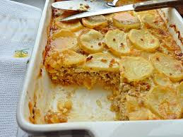

Musaka - a great combination of potatoes with minced meat
Want to see about some other dish? Go to the Home page and pick something from there
Are you someplace other than the balkans and want to try to cook something new? Musaka is the answer to this!
Things you should know before trying to prep this dish:
- Preparation time will approximately be 15-20mins
- Cooking time will approximately be 1 hour
In total, 1 hr & 10-20 mins will take to make this dish
Ingredients:
- 1kg of potatoes
- 500g of turkey meat
- 1 onion
- 2 eggs
- 200ml of milk
- Salt and pepper to taste
Steps to follow:
- Preheat the oven to 325 degrees F (165 degrees C).
- Heat olive oil in a large skillet over medium heat. Cook and stir ground beef in hot oil until crumbly and evenly browned, 5 to 7 minutes. Season with paprika, cumin, salt, and pepper. Stir in potatoes and cook for 2 to 3 minutes. Stir in tomato sauce and summer savory. Pour in enough water to just barely cover. Reduce heat and simmer for 15 minutes.
- Pour meat mixture into a 9x13-inch baking dish and spread evenly. Mix together yogurt and beaten egg in a small bowl; spread over meat mixture to cover.
- Pour meat mixture into a 9x13-inch baking dish and spread evenly. Mix together yogurt and beaten egg in a small bowl; spread over meat mixture to cover.
- Cover the dish with aluminum foil and bake in the preheated oven for 30 minutes. Remove the foil and continue baking until the top is golden brown, about 30 minutes more.
After following all the steps, your musaka should look like this:
